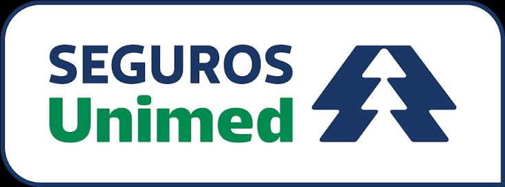

Soluções empresariais em saúde
Seguros Unimed: cuidado, confiança e benefícios para sua empresa.
Opções regionais e nacionais para empresas que buscam assistência médica de qualidade, flexibilidade de contratação e vantagens que vão além do plano de saúde.
Opções regionais e nacionaisCom ou sem coparticipaçãoAlternativas com reembolso

Uma história de cuidado e solidezMais de 35 anos de história e mais de 7 milhões de clientes, conforme o Manual PME 2026.Escolha o perfil de cobertura
Alternativas para diferentes necessidades
A Seguros Unimed oferece opções com características distintas. A disponibilidade e a composição da rede dependem do produto contratado e da região.
Novo Essencial
Uma alternativa regional para quem prioriza atendimento na área de cobertura do produto.
- Opção voltada a quem busca assistência médica regional.
- Alternativa para avaliar conforme a localização e a rede disponível.
- Consulte a área de abrangência e os prestadores disponíveis para seu município.
Linhas nacionais PME
Opções para empresas que valorizam mobilidade e acesso a atendimento em diferentes regiões do país.
- Linhas Compacto, Efetivo, Completo, Superior, Superior Plus e Sênior, conforme elegibilidade.
- Alternativas com acomodação em enfermaria ou apartamento, conforme o plano.
- Opções com ou sem coparticipação.
- Possibilidade de reembolso, com limites e regras próprios de cada categoria.
Mais que assistência médica
Benefícios e serviços que agregam valor
O Manual PME 2026 apresenta um conjunto de benefícios associados aos produtos. A disponibilidade pode variar conforme a linha contratada e as condições do serviço.
Unimed Odonto
Plano odontológico Essencial RB, indicado no manual como benefício sem custo adicional nos produtos PME. Inclui coberturas odontológicas previstas no rol da ANS, conforme contrato.
Remissão por 1 ano
Em caso de falecimento do titular, os dependentes inscritos podem ter cobertura médico-hospitalar por 1 ano, conforme as regras do benefício.
Garantia funeral
Assistência aos familiares do segurado para apoio e cobertura de parte das despesas funerárias, conforme condições do serviço.
Assistência residencial
Serviços de reparo e manutenção residencial, conforme os limites e as condições da assistência contratada.
Assistência PME
Serviços de apoio para pequenas e médias empresas, como chaveiro, encanador, eletricista, vidraceiro e outros serviços previstos no manual.
Descontos em medicamentos
Condições especiais em redes de farmácias parceiras e acesso à rede exclusiva de Farmácias Unimed, conforme regras vigentes.
Clube Seguros
Convênios com estabelecimentos físicos e virtuais, com descontos em produtos e serviços. As parcerias podem ser alteradas.
Reembolso
Possibilidade de solicitar reembolso por atendimentos elegíveis realizados fora da rede, respeitando limites, múltiplos e regras do plano.
Check-up
Benefício de check-up para o titular, por reembolso ou rede referenciada, conforme periodicidade e limites previstos na contratação.
Assistência internacional
Assistência durante viagens no Brasil ou exterior, observadas as condições de distância da residência e duração da viagem.
Assistência acessibilidade
Serviços que podem incluir instalação de barras de apoio e itens de segurança, além de orientação para equipamentos.
Assistência Kids
Serviços residenciais voltados à segurança das crianças, como proteção de quinas, portas, escadas e tomadas, conforme o plano.
Assistência Pet
Serviços de apoio ao animal assistido, que podem incluir orientação, agendamento, leva e traz e outras facilidades previstas no manual.
Assistência Concierge
Informações e suporte de conveniência relacionados a lazer, cultura, saúde, finanças e comodidade.
Einstein Corporate
Nos produtos indicados no manual, acesso a atendimento médico eletivo em consultas e cirurgias nas unidades do Hospital Albert Einstein, conforme regras específicas.
Flexibilidade para a empresa
Um plano que pode acompanhar o perfil do seu negócio.
Além da escolha entre linhas regionais e nacionais, o manual apresenta alternativas de coparticipação, reembolso e serviços opcionais de saúde ocupacional para empresas.
Com ou sem coparticipaçãoReembolso conforme categoriaPossibilidade de redução de carênciasTele-entrevista em grupos elegíveisServiços opcionais de PCMSOUnifarma Digital a partir de 30 vidas
Informações institucionais e características extraídas do Manual PME 2026 da Seguros Unimed. Benefícios, assistências, rede, reembolso, carências e condições de aceitação variam conforme o produto, a região, a quantidade de vidas e a análise da seguradora. O material consultado informa regras específicas de aceitação empresarial, inclusive restrições para MEI em determinadas configurações jurídicas. A elegibilidade deve ser validada antes da cotação. Nenhum benefício deve ser considerado garantido sem confirmação nas condições contratuais vigentes.
Quer descobrir qual opção combina com sua empresa?
Fale com Gerry Dias e solicite uma análise das alternativas regionais e nacionais da Seguros Unimed.